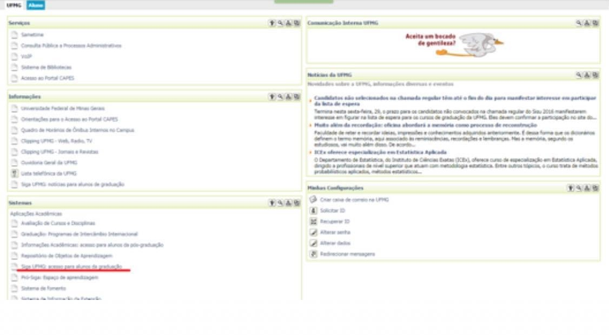
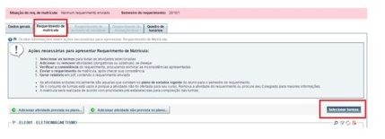
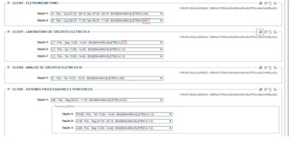
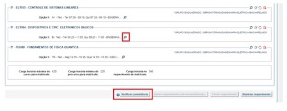
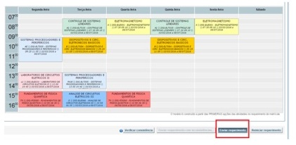

Matrícula
1º
Acesse o portal Minha UFMG e, na aba UFMG, cique em Siga UFMG: acesso para alunos de graduação.
2º
No portal Siga, acesse Avaliação de turmas e professores, que se encontra na última coluna da última linha.
3º
Acesse a aba Qustionários de Avaliação e responda todos os questionários disponíveis.
4º
Volte ao portal siga e acesse Meu Requerimento de Matrícula, que se encontra na última coluna de primeira linha.
5º
Acesse a aba Requerimento de Matrícula e, em seguida, cique em Selecionar Turmas.
6º
Selecione até três turmas, sabendo que a Opção 1 se refere à turma/horário de sua preferência. Caso não tenha mais vagas na turma da Opção 1 tentarão te alocar na Opção 2 e assim por diante. Para saber quais são os critérios de alocação automática de cada matéria clique na lupa, que se encontra à direita. Além disso, é importante saber que o número que se encontra após cada turma se refere à quantidade de vagas disponíveis.
7º
Após escolher todas as turmas clique em Salvar.
8º
Agora é possível clicar na lupa de cada matéria e, se estiver disponível, conferir o professor que irá ministrar a disciplina. Se você não desejar fazer nenhuma alteração nas turmas, clique em Verificar Consistência.
9º
Caso não tenha nenhuma inconsistência você será redirecionado para sua grade de horários da primeira opção. Clique, em seguida, em Enviar Requerimento. O download do comprovante de matrícula será feito em seu computador.
Para mais informações acesse Manual do Aluno_Matrícula, fornecido pela UFMG.